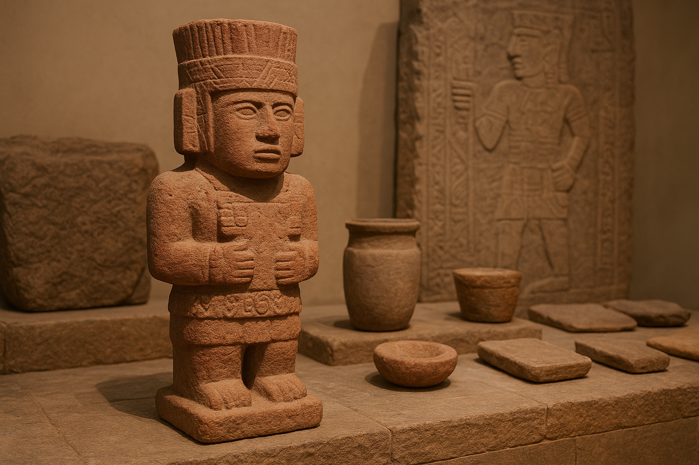

Welcome
The Toltec Discovery Museum is a virtual institution dedicated to the preservation, research, and interpretation of Mesoamerican cultures. Our team works tirelessly to uncover the history behind ancient artifacts and to bring those stories to the public.
Recent Discoveries

Excavations at Tula continue to reveal ceremonial sculptures and pottery that reshape our understanding of Toltec ritual and architecture.